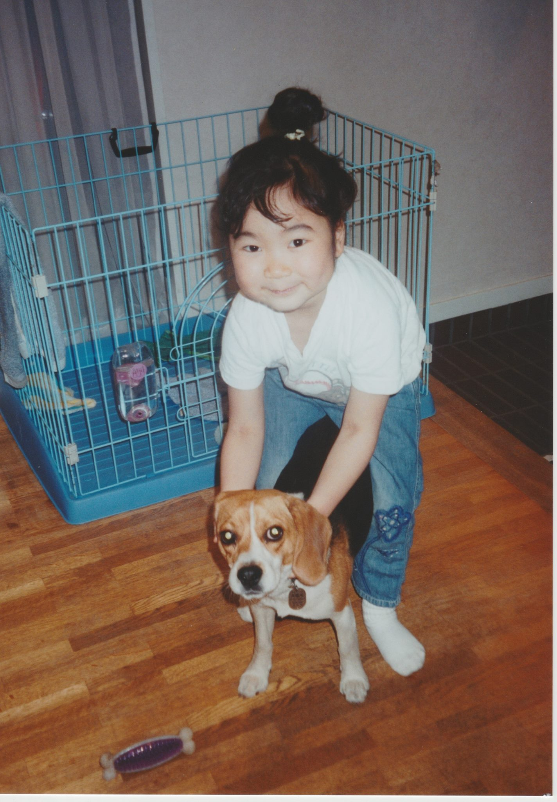

I'm a senior at Tufts University studying a unique combination of Computer Science & Child Study and Human Development. I am passionate about understanding how the user interacts with a product, thus have pursued a study in both the product and the user.

My international background has made me attentive to cultural differneces and a desire to better cater things to different audiences. Now equipped with understanding of technological tools, I'm driven to cater products to the best fit to as many unique users as possible. I have a diverse background of working at a national nonprofit organization that works with mayors and city government across the US, conducting research about at-risk populations in New Orleans, and compiling reports about the usability of technological tools used at Tufts. I am eager to learn about more UX research tools and skills to be able to make a postive impact on users.
14+
Partners
55+
Projects Done
89+
Happy Clients
150+
Meetings
PORTFOLIO
MY WORK
Here are some of my latest lorem work ipsum tipsum. Click on the images to make them bigger
/* */
CONTACT
CONTACT
I'd love to talk further about career opportunities.

 /* */
/* */